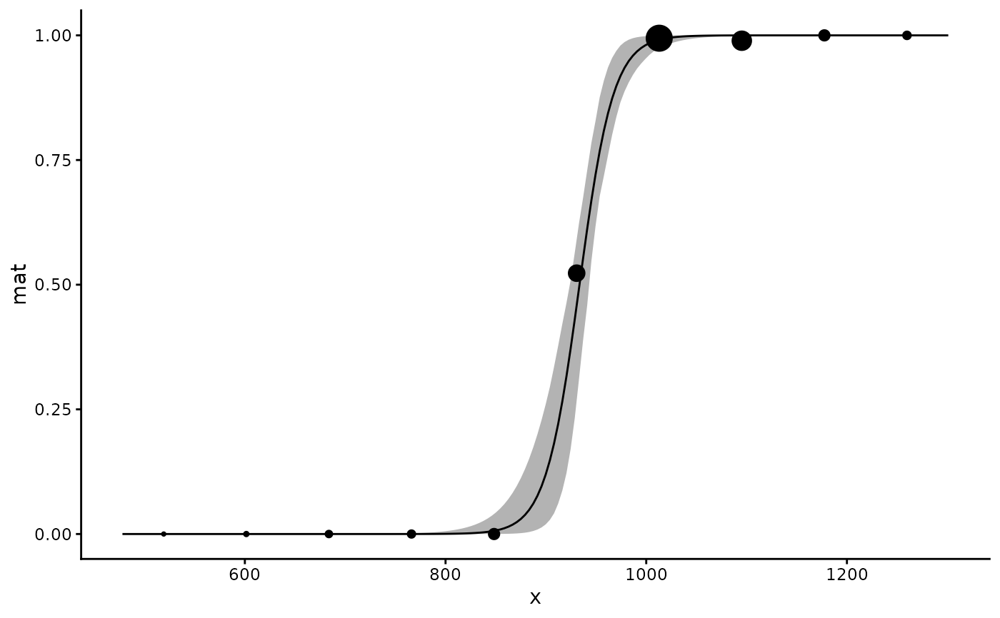
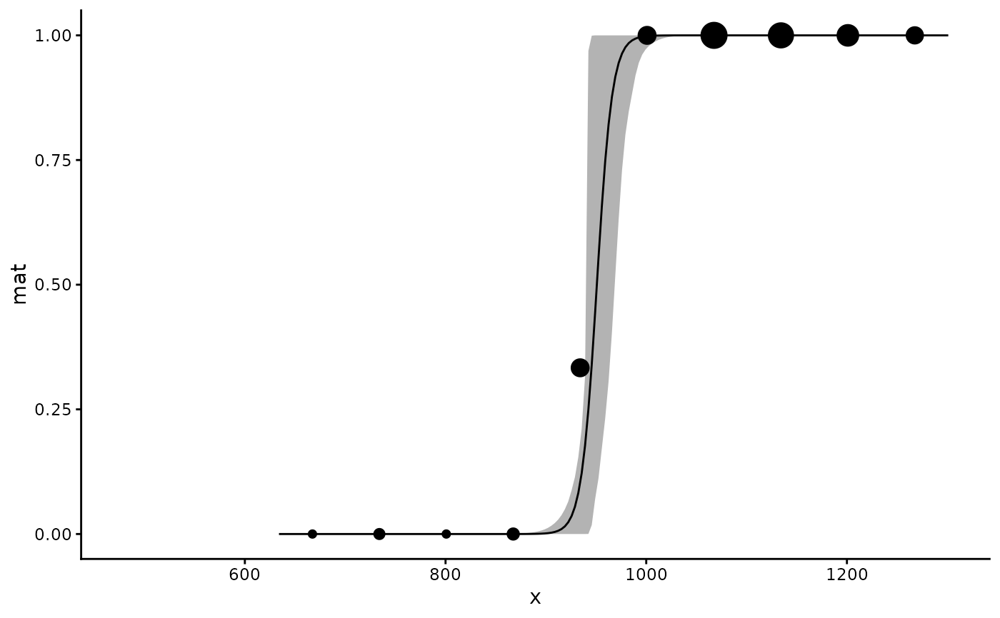
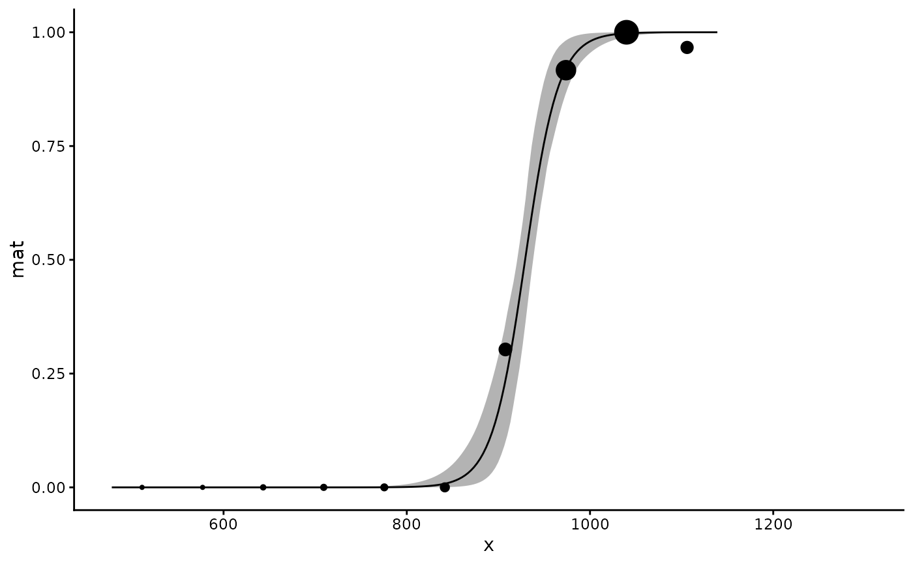

Analyse length or age at maturity
maturity.RdFits a logistic regression model (binomial GLM) of maturity stage as a
function of length, age, or another continuous predictor. Bootstrap
confidence intervals are computed via rsample.
Arguments
- mat
Binary maturity variable (0 = immature, 1 = mature)
- x
Continuous predictor variable (e.g. length, age)
- grouping_var
Optional categorical grouping variable (e.g. sex). Will be converted to a factor.
- data
A data frame containing the above variables
- times
Number of bootstrap replicates (default 1000)
Value
A nested tibble of class "maturity" with one row per group,
containing list columns data, coefs, preds, and mods,
each named by the grouping variable level.
Examples
data(spottail)
lm50 <- maturity(maturity_stage, length, sex, data = spottail, times = 100)
#> The categorical variable sex has 2 levels.
#> Warning: There were 4 warnings in `mutate()`.
#> The first warning was:
#> ℹ In argument: `L95_b = map_dbl(mod_b, ~(log(0.95/0.05) -
#> coef(.x)[[1]])/coef(.x)[[2]])`.
#> ℹ In group 0: .
#> Caused by warning:
#> ! There were 24 warnings in `mutate()`.
#> The first warning was:
#> ℹ In argument: `mod_b = map(splits, ~glm(mat ~ x, family = binomial, data =
#> rsample::analysis(.x)))`.
#> Caused by warning:
#> ! glm.fit: fitted probabilities numerically 0 or 1 occurred
#> ℹ Run `dplyr::last_dplyr_warnings()` to see the 23 remaining warnings.
#> ℹ Run `dplyr::last_dplyr_warnings()` to see the 3 remaining warnings.
summary(lm50)
#> # A tibble: 3 × 10
#> a b L50 L50_lower L50_upper L95 L95_lower L95_upper n N
#> <dbl> <dbl> <dbl> <dbl> <dbl> <dbl> <dbl> <dbl> <int> <int>
#> 1 -55.4 0.0594 934. 927. 941. 983. 966. 1002 430 341
#> 2 -124. 0.131 951. 940. 964. 973. 942. 993. 118 97
#> 3 -51.1 0.0550 929. 921. 939. 983. 963. 999. 312 244
plot(lm50)
#> $all

#>
#> $f

#>
#> $m

#>